Welcome to my portfolio. Below are the first prints I made with a letterpress.
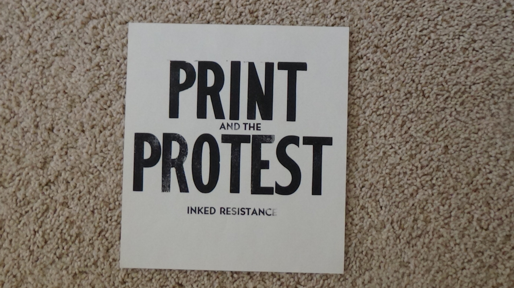“But the Ekumen is not essentially a government at all. It is an attempt to reunify the mystical with the political, and as such is of course mostly a failure; but its failure has done more good for humanity so far than the success of its predecessors.” – Ursula Le Guin in The Left Hand of Darkness
The art community encourages me to express my feelings towards a pressing issue, thus affecting how I interact through print. I was trying a bit too hard, so I go in nature to reaccess my motivations. The errand of picking greens is rather healing. Every time I do this though, I would damage a part of a plant without thinking about it. Hence, ‘Immerse in biodiversity to prᵒtect it’. In making this print, the ‘o’ of protect was unintentionally flipped. This made me question whether my intentions of protecting biodiversity were true. Next came ‘Adapt with forest Adapt with body Adaptive immunity’ with each phrase becoming increasingly harder to read. I allude to how manmade structures allow limited space for life to live by the way my words form a box. It expresses and counters my innate tendency for being in control of life. By holding the print one side, the protestor makes one line clear for others and the opposing line clear for him or herself. The manmade structure I am alluding to here is a block of time from Google Calendar. Life's destiny is confined in a rectangle; such is the way of managing the future within a job. Although with good intentions, my prints involuntarily show a restrained relationship with my perception of environment. This has opened my curiosity to less desirable conditions caused by others in attempt to improve quality of life. It is inevitable. For instance, Standing Rock is a reservation exploited for fossil fuels where Native Americans could only sing peace songs for the policemen there to hose them out of the way. Workers exploit oil pipelines for increasing demand and profit. This inspired me to protest hard work. "Work does not help When it is not Asked for" addresses overwork. It is themed in green and blue to relate to natural earth colors with emphasis on "Work When Asked". For Native Indians being evacuated from their property, being targetted with fire hoses is overkill. There is a contrast between policemen putting out a forest fire on the news versus protestors being attacked with teargas, rubber bullets, and massive freezing water from Maybell Reiter's Facing Force with Prayer Native Americansin Peaceful Protest against Big Oil and Injustice. Financial differences determined which information is spread across media. From a problem-solving perspective, printmaking has detoxed me from inactivity in the face of issues beyond control. If this can bring light to destructive and financially-motivated patterns hidden by misinformation, then great. I just wanted to be out of my zone. The message of my prints lies in the struggle that readers endure to get it.
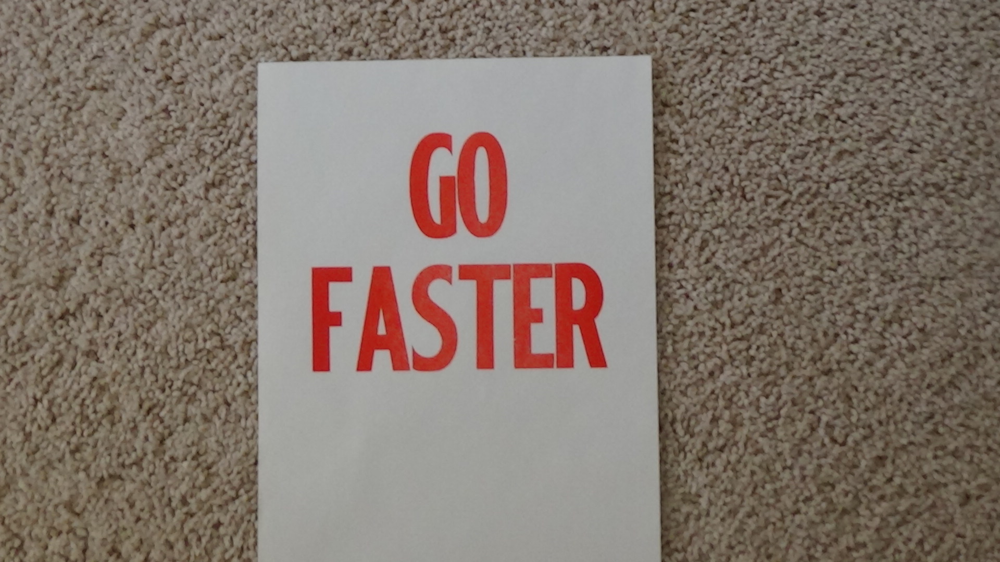This is my name with a catchphrase. It was made with the intent of renewing myself in the workplace.
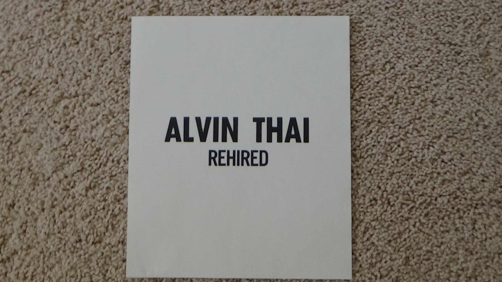With my occupation as tutor in mind, my group agreed to collaborate with me on this.
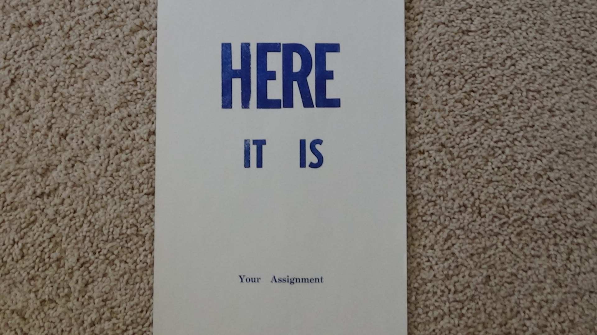Part of why I made this is to express gratitude for being in schoo- I mean a place of diverse experiences.
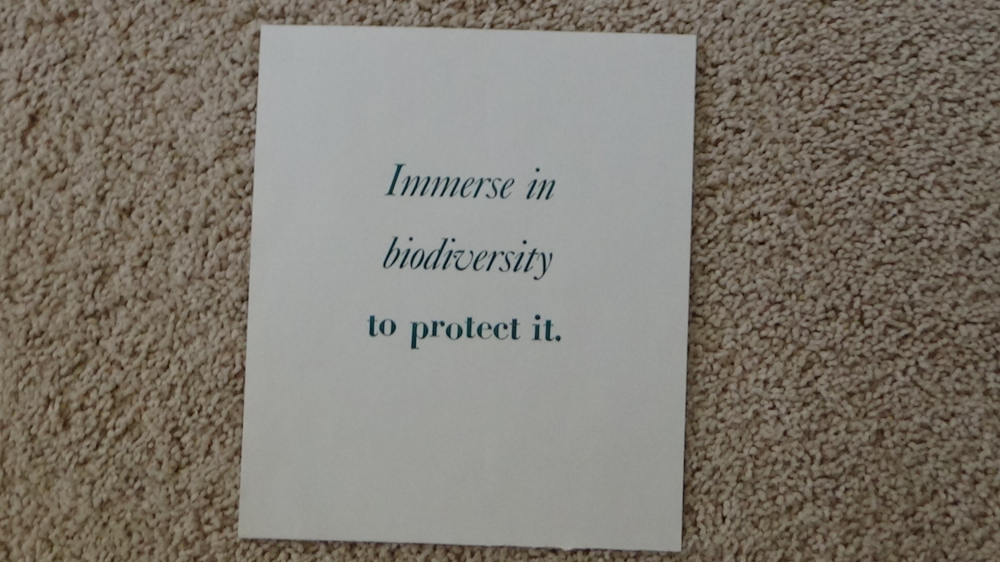This expresses one of my values. Being accountable of my work is what lets me sleep at night. This is a response to Harryette Mullen's "We are not responsible", a poem that attacks connotations of having a job.
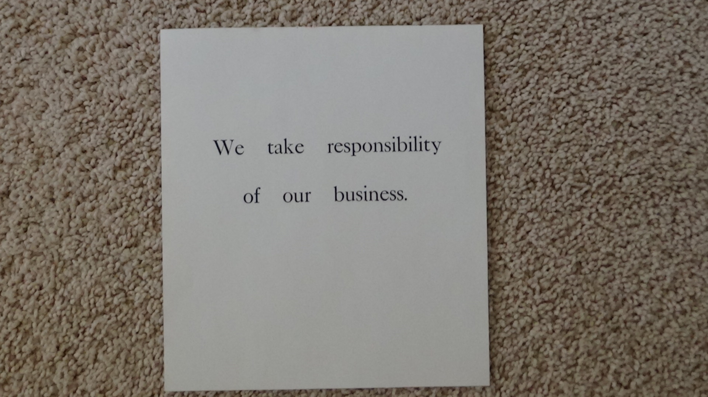After reading a poem by Harryette Mullen and researching general health trends, I printed "Adapt with forest", "Adapt with body", and "Adaptive Immunity" while gradually changing font size to match the scale of each phrase. The words that become inconvenient to read express my relationship with those matters.
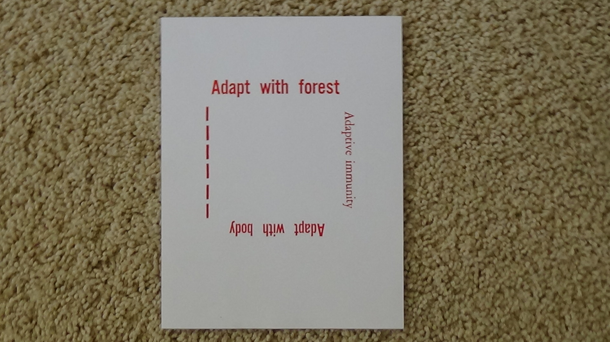 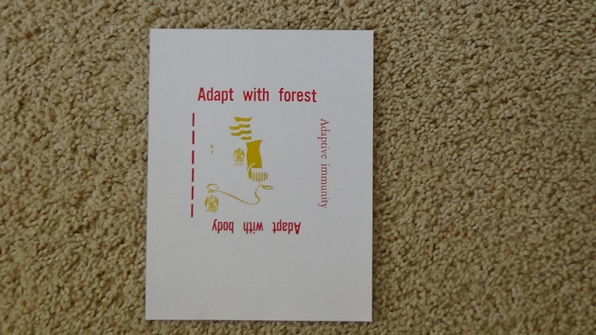This letterpress protests an industrialization for excessive service. It applies to oil pipelines built on Standing Rock, but had me questioning work and home life boundaries. The E in when came out backwards in one of my prints.
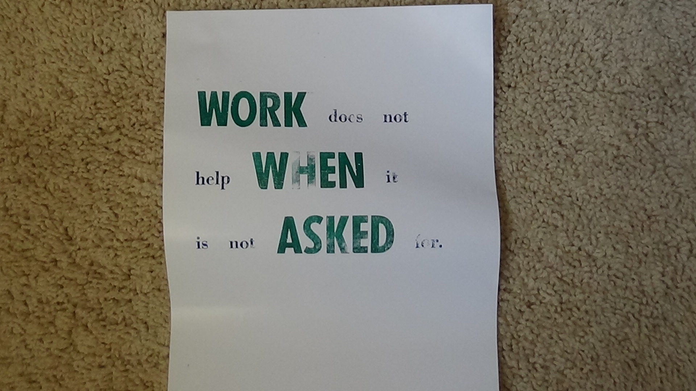 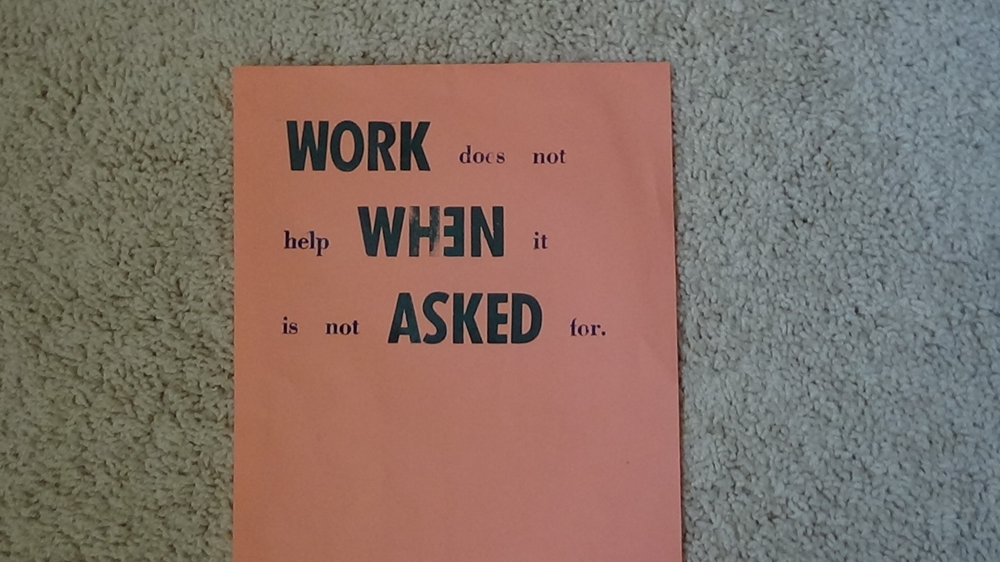This print has a graphic pressed through a thin screen coated with emulsion. The same method is used for print on clothing. I got to squeegee this one only.
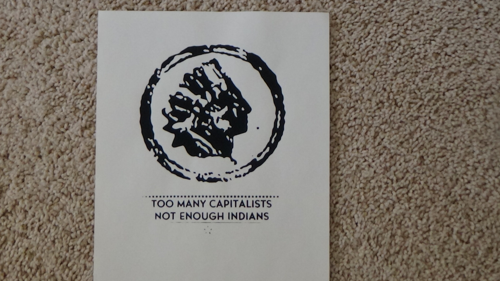My attempt at coating and washing off emulsion was done by using the transparency below. It's a print with Python turtle. In retrospect, lines have to be dense enough to block light from the UV exposure machine.
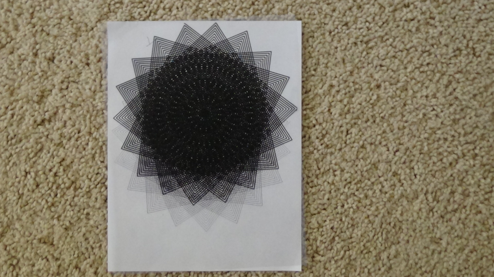